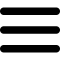
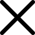
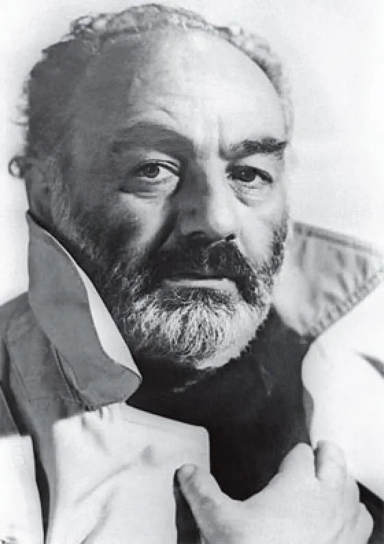
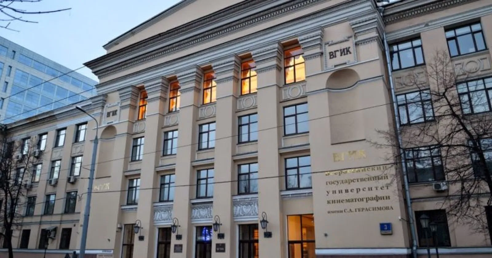
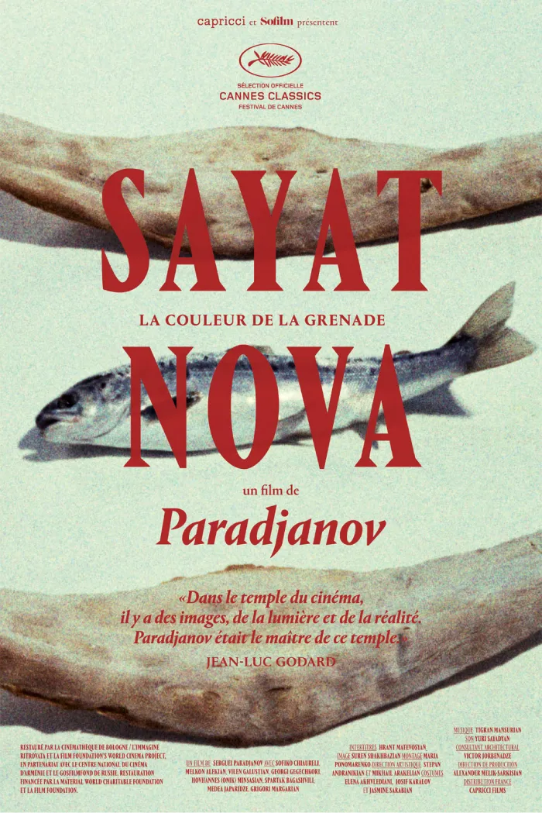
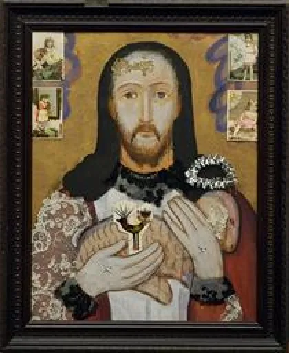
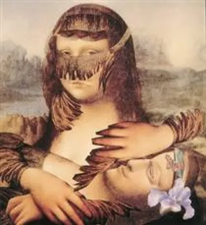
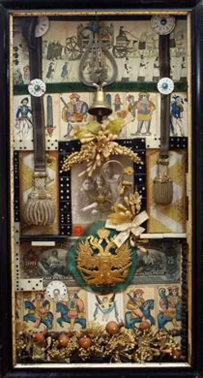

<!DOCTYPE html>
<html lang="fr" x-data="{menuIsOpen: false}" :class="{noscroll:menuIsOpen,}"></html>
<html lang="fr">
<head>
    <meta charset="UTF-8">
    <meta http-equiv="X-UA-Compatible" content="IE=edge">
    <meta name="viewport" content="width=device-width, initial-scale=1.0">
    <title>Daay'o</title>
    <script defer src="https://unpkg.com/alpinejs"></script>
    <link rel="stylesheet" href="../src/css/style.css">
    
</head>
<body>

    <header>

        <button aria-controls="mainNav" @click="menuIsOpen = ! menuIsOpen"
        class="header__icone--menu-burger">
        
        
        </button>
        <nav
        id="mainNav" x-show="menuIsOpen" x-transition.duration.800ms class="menu">

        <ul>
            <li><a class="menu__list" href="./serguei_paradjanov.html">Sergueï paradjanov</a></li>
            <li><a class="menu__list" href="./leonid_sejka.html">Leonid Sejka</a></li>
            <li><a class="menu__list" href="./robert_rauschenberg.html">Robert Rauschenberg</a></li>
            <li><a class="menu__list" href="./jospeh_beuys.html">Joseph Beuys</a></li>
            <li><a class="menu__list" href="./billeterie.html"> Billetterie</a></li>
        </ul>
        </nav>

        <a href="../en/home_page.html">
            
        </a>

        <a href="./index.html"><h1 class="header__nom--site">Daay'o</h1></a>

    </header>


    <div>
        
        <h2 class="titre__article--serguei">Sergueï Iossifovitch Paradjanov</h2>
    </div>


    <main>

        <section class="block__article">

            <h2 class="titre__page-article-serguei">Sa vie</h2>

            <p class="text__page-article-serguei">
                Sergueï Iossifovitch Paradjanov (en cyrillique russe : Сергей Иосифович Параджанов, en arménien : Sarkis Paradjanian) 
                né le 9 janvier 1924 à Tbilissi en RSS de Géorgie. 
            </p>

            <p class="text__page-article-serguei">
                Mort le 20 juillet 1990 à Erevan en RSS d'Arménie, est un réalisateur qui fut controversé en Union soviétique 
                (astreint en 1973 aux travaux forcés pendant quatre ans, 
                puis incarcéré à différentes reprises jusqu'en 1982), mais très défendu et apprécié par les cinéphiles occidentaux. 
            </p>

            <p class="text__page-article-serguei">
                Un musée lui est consacré à Erevan, en Arménie, où il est considéré comme le grand cinéaste national.
            </p>

            <p class="text__page-article-serguei">
                Sans connaître la langue de ses ancêtres arméniens, ni leur pays, Paradjanov va graduellement s’éloigner de la grammaire
                soviétique pour élaborer une œuvre cinématographique en prise directe avec les traditions des régions où il tourne
                (Ukraine, Géorgie, Azerbaïdjan, Arménie). 
            </p>

            <p class="text__page-article-serguei">
                Artiste pluriethnique, musicien, plasticien, peintre, il doit en partie sa tournure d’esprit au fait que son père, Iossif Paradjanian, était antiquaire.
            </p>

        </section>

        <section class="block__article">

            <h2 class="titre__page-article-serguei">Une attirence vers l'art</h2>

            <p class="text__page-article-serguei">
                Un contact précoce avec les objets d’art a façonné son imaginaire et son goût pour les collections. 
            </p>

            <p class="text__page-article-serguei">
                Il a inspiré sa pratique passionnée des collages, qui tiennent à la fois de l’art conceptuel et du folklore naïf ; 
            </p>

            <p class="text__page-article-serguei">
                Des films compressés en quelque sorte, que Paradjanov bricolait lorsqu’il ne pouvait pas tourner (en prison notamment). 
                Sa vie et son art étaient mêlés.
            </p>

            <p class="text__page-article-serguei">
                Paradjanov est issu de l’une des plus grandes écoles de cinéma du monde, le VGIK de Moscou, dans laquelle il entre en 1945.
            </p>

            

        </section>

        <section class="block__article">

            <h2 class="titre__page-article-serguei">Un des films qu'il a réalisé</h2>

            <p class="text__page-article-serguei">
                En 1968, il réalise Sayat Nova. Le film sera également censuré. 
                Sayat- Nova (La Couleur de la grenade), est inspiré de la vie d’un poète arménien mort en Géorgie.  
            </p>

            <p class="text__page-article-serguei">
                Au lieu d’un récit linéaire, le cinéaste, à la fois structuraliste et traditionaliste,
                opte pour une série de tableaux vivants représentant des moments clés de la vie du poète. 
            </p>

            <p class="text__page-article-serguei">
                Paradjanov déclare : « Il m’a semblé qu’une image statique, au cinéma, peut avoir une profondeur, 
                telle une miniature, une plastique, une dynamique internes… »
            </p>

            

        </section>

        <section class="block__article">

            <h2 class="titre__page-article-serguei">articles sur différentes oeuvre qu'a produit Sergueï Paradjanov</h2>

            <div class="motif_barre-barre--droite-article"></div>
            <h3 class="description__oeuvre">Easter</h3>
            
            <h3 class="description__oeuvre-date">1971-1984</h3>
            <a href="./serguei_oeuvre_easter.html"><p class="redirection__page-oeuvre">Cliquez ici pour en décourvir plus sur l'oeuvre</p></a>

            <div class="motif_barre-barre--gauche-article"></div>
            <h3 class="description__oeuvre">Pieta</h3>
            
            <h3 class="description__oeuvre-date">1988</h3>
            <a href="./serguei_oeuvre_pieta.html"><p class="redirection__page-oeuvre">Cliquez ici pour en décourvir plus sur l'oeuvre</p></a>

            <div class="motif_barre-barre--droite-article"></div>
            <h3 class="description__oeuvre">Life and death of general Radko</h3>
            
            <h3 class="description__oeuvre-date">1983</h3>
            <a href="./serguei_oeuvre_radko.html"><p class="redirection__page-oeuvre">Cliquez ici pour en décourvir plus sur l'oeuvre</p></a>
            <div class="motif_barre-barre--gauche-article"></div>

        </section>

    </main>


    <footer>

        <a href="./index.html"><h1 class="footer__nom-site">Daay'o</h1></a>

        <ul>
            
            <li class="footer__pages-annexes">
                <a href="./a_propos.html">A propos</a>
            </li>

            <li class="footer__pages-annexes">
                <a href="./contact.html">Contact</a>
            </li>
        </ul>

        <ul class="footer__reseaux">
            <li>
                <a href="">
                    </a>
            </li>

            <li>
                <a href="">
                    </a>
            </li>

            <li>
                <a href="">
                    </a>
                </li>
        </ul>

        <a class="footer_mailto" href="">event-daayo@gmail.com</a>

        <p class="footer__copyright">Copyright © 2023-Faris Halepovic-MMi 1A2 Montbéliard</p>

    </footer>
    
</body>
</html>